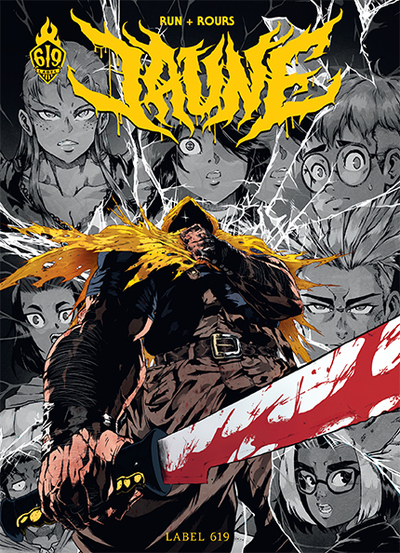
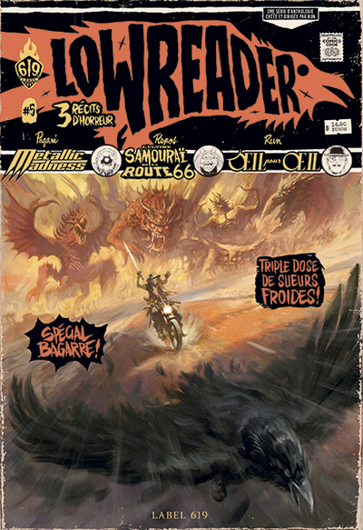

À propos
Bienvenue sur notre fanclub dédié au Label 619, un collectif emblématique de la bande dessinée et de la culture graphique alternative. Ici, vous découvrirez tout ce qu'il y a à savoir sur le Label ! Leurs œuvres emblématiques, les nouveautés, des histoires captivantes et des artistes talentueux qui ont marqué le monde de la BD. Le Label n'aura plus aucun secret pour vous !
Nouveautés
-

Jaune
Il est dit qu'un mystérieux tueur au ciré jaune, armé d'une machette et portant une biche sur l'épaule, "le Slasher", sévissait il y a longtemps dans la région. C'est en tout cas l'histoire que racontent les moniteurs du camp de vacances auquel participe Lucie lors d'une veillée, dans le but d'effrayer les adolescents. Moquée et mise à l'écart du groupe, celle-ci subit au quotidien les humiliations de ses camarades, jusqu'à ce que les choses dérapent de manière irréversible : les harceleurs décident de faire une mauvaise blague à Lucie. Justin, le leader du petit groupe, la surprend en pleine nuit en se faisant passer pour le Slasher.
-

Lowreader
LowReader est une série d'anthologie d'histoires courtes de suspense, d'horreur et d'exploitation, dirigée par Run. Chaque numéro propose trois histoires complètes. Suivez le corbeau ! • Oeil pour oeil, RUN • L'Ultime samouraï de la route 66, par Sylvain Repos • Metallic Madness, par Baptiste Pagani.
Réalisations
Mutafukaz
Angelino squatte une chambre d'hôtel miteuse dans le quartier latino de Rios Rosas avec son pote Vinz et enchaîne les petits boulots.
Putamadre
Âgé de douze ans, Jesus est condamné à sept années de prison pour le meurtre de son petit frère. Il découvre l'univers carcéral américain et ses multiples codes. .
Hoka Hey
Dès 1850, les jeunes amérindiens étaient internés de force dans des pensionnats catholiques pour les assimiler à la nation américaine. En 1900, la population des natifs en Amérique du Nord avait diminué de 93%.
Loba Loca
Loba Loca nous raconte les aventures de Guada, une jeune fille qui a du mal à se canaliser et va trouver dans la lucha libre un échappatoire. La première bonne surprise est que Guada est très bien écrite.
Shangri-La
Dans un futur lointain de quelques centaines d’années, les hommes vivent dans une station spatiale loin de la Terre et régie par une multinationale à qui est voué un véritable culte. En apparence, tout le monde semble se satisfaire de cette « société parfaite ».
Tank Girl
Dans une Australie post-apocalyptique où les piliers d’une société ultra-violente s’affrontent, vit Rebecca, jeune libertaire bordélique, qui ne se déplace jamais sans son Tank, d’où son surnom désormais célèbre dans tout l’outback : Tank Girl.
Carbone & Silicium
2046 Derniers nés des laboratoires Tomorrow Foundation, Carbone et Silicium sont les prototypes d’une nouvelle génération de robots destinés à prendre soin de la population humaine vieillissante. Élevés dans un cocon protecteur, avides de découvrir le monde extérieur, c’est lors d’une tentative d’évasion qu’ils finiront par être séparés.
Doggy Bags
Le concept de DoggyBags, depuis la parution du premier numéro en 2011, est de reprendre les thèmes, l’esthétique et les codes narratifs des pulp fictions, qui ont fait le régal de leurs lecteurs dans l’Amérique de la première moitié du 20ème siècle.
Auteurs
Run
À la fois graphiste et illustrateur, RUN travaille, du haut de son mètre soixante-dix, sur son univers à partir d'influences provenant de l'âge d'or de la S.F., des séries Z et de la culture populaire latino. Son parcours artistique est plutôt atypique : d'abord cinq ans directeur artistique dans la très célèbre agence multimédia Teamchman, précurseur du contenu Internet, il travaille sur des projets de publicité pour de grosses enseignes (Warner Music, Sony Music…). Fort de cette expérience, il s'illustre en 2004 au sein du collectif de graphistes Semperfi (www.semperultimo.com), référence internationale en matière de toy design et de graphisme. Il se spécialise alors dans la réalisation vidéo et affine son univers graphique, fait de têtes de mort et de gangsters en tout genre.
Florent Maudoux
Florent Maudoux est né en 1979. Formé au dessin animé à l'école des Gobelins, amateur de films hongkongais, ses influences se situent à la croisée des mangas et de l'art classique italien ou encore des illustrateurs anglais du XIXe siècle. Ses expériences d'animateur 3D et storyboarder dans l'univers du jeu vidéo (Eden Games), puis d'illustrateur et concepteur de figurines (Rackham), lui permettent de développer son art de la mise en scène, son sens du détail et sa palette de couleurs. Il met aujourd'hui ses qualités au service de la B.D., notamment avec Freaks' Squeele, Doggybags à Ankama Editions pour le Label 619.

Neyef
Neyef est né en 1984 et passe son enfance en Allemagne. Après des études à l’école d’arts appliqués Pivaut à Nantes, il débute sa carrière dans la bande dessinée et croise rapidement le chemin de Run et du Label 619. Il travaille sur des histoires courtes pour DoggyBags et Midnight Tales, et dessine Puta Madre, série parallèle à l’univers de Mutafukaz. Neyef s’attelle ensuite à Hoka Hey, récit initiatique brutal mais plein d’émotion et d’humanité, qu’il signe chez Rue de Sèvres, toujours au sein du Label 619. Il réside à Nantes.